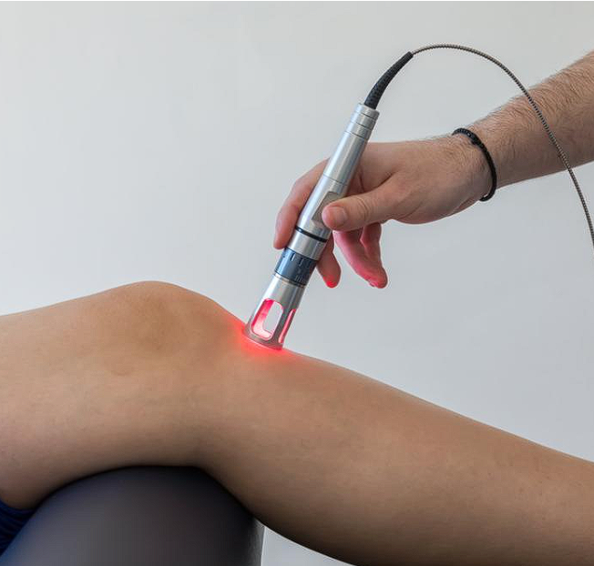
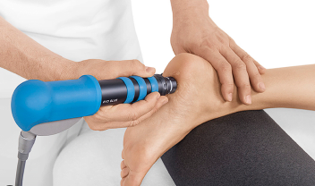
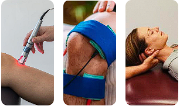
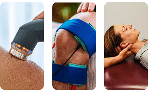

Advanced, Root-Cause focused Therapies for Faster, Lasting Relief !
Photo-biomodulation by Class-IV Laser

Photobiomodulation (PBM) with a Class IV laser uses high-intensity light to stimulate cellular activity, promoting healing and pain reduction by increasing ATP production, reducing inflammation, and accelerating tissue repair. Class IV lasers, unlike surgical lasers, are designed for therapeutic use, delivering a large amount of photonic energy in a shorter time to penetrate tissues deeply. This non-thermal process interacts with chromophores in cells, triggering a cascade of beneficial physiological reactions.
Extracorporeal Shockwave Therapy (ESWT)

Extracorporeal Shockwave Therapy (ESWT) uses focused or radial acoustic pressure waves to stimulate the body’s natural healing response in painful or poorly healing tissues. The mechanical energy delivered into the affected area can improve local circulation, influence pain pathways, stimulate cellular activity, and promote tissue remodeling. Shockwaves may also help break down pathological calcifications in certain conditions, such as calcific tendinopathy. Unlike surgical shockwaves used for stone fragmentation, therapeutic shockwave systems are designed to deliver controlled mechanical energy to musculoskeletal tissues. This non-invasive treatment is commonly used for conditions such as chronic tendinopathies, plantar fasciitis, tennis elbow, and other persistent soft-tissue disorders.
Combination Therapy
( Laser | IFT | Traction )

Laser combination therapy with Interferential Therapy(IFT) & Decompression Therapy (Traction) involves using these three modalities together in physiotherapy for comprehensive pain relief, enhanced healing,
and accelerated recovery. This combined approach leverages IFT's deep tissue electrical stimulation for muscle and nerve stimulation, Decompression Therapy (Traction) for releasing inter-bone compression with the biostimulatory effects of
laser therapy to promote cellular repair and reduce inflammation. The synergy of these treatments is typically delivered through advanced, multi-modality devices designed for both clinical use.
`
Combination Therapy
( Laser | IFT | Shockwave )

Shockwave + Class-IV Laser Therapy combines mechanical acoustic energy with high-intensity photobiomodulation to support healing, reduce pain, and improve tissue function. Shockwaves provide controlled mechanical stimulation that promotes circulation, tissue remodeling, and the body’s natural repair response, while Class-IV laser therapy delivers photonic energy to stimulate cellular activity, support ATP production, and help modulate inflammation and pain. Used together, these complementary therapies can target both the mechanical and cellular aspects of tissue recovery, making the combination extremely effective in many chronic musculoskeletal and soft-tissue conditions..
`
Combination Therapy ( US | IFT | Traction )

Ultrasound Combination Therapy with Interferential Therapy (IFT) & Decompression Therapy (Traction) is a physiotherapy technique that simultaneously applies high-frequency sound waves
(ultrasound), low-frequency electrical currents (IFT) & Decompression Therapy (Traction) for releasing inter-bone compression to the same area to promote pain relief, reduce inflammation, and accelerate healing through a synergistic effect.
Photo-biomodulation by Class-IV Laser

Photobiomodulation (PBM) with a Class IV laser uses high-intensity light to stimulate cellular activity, promoting healing and pain reduction by increasing ATP production, reducing inflammation, and accelerating tissue repair. Class IV lasers, unlike surgical lasers, are designed for therapeutic use, delivering a large amount of photonic energy in a shorter time to penetrate tissues deeply. This non-thermal process interacts with chromophores in cells, triggering a cascade of beneficial physiological reactions.
Extracorporeal Shockwave Therapy (ESWT)

Extracorporeal Shockwave Therapy (ESWT) uses focused or radial acoustic pressure waves to stimulate the body’s natural healing response in painful or poorly healing tissues. The mechanical energy delivered into the affected area can improve local circulation, influence pain pathways, stimulate cellular activity, and promote tissue remodeling. Shockwaves may also help break down pathological calcifications in certain conditions, such as calcific tendinopathy. Unlike surgical shockwaves used for stone fragmentation, therapeutic shockwave systems are designed to deliver controlled mechanical energy to musculoskeletal tissues. This non-invasive treatment is commonly used for conditions such as chronic tendinopathies, plantar fasciitis, tennis elbow, and other persistent soft-tissue disorders.
Combination Therapy
( Laser | IFT | Traction )

Laser combination therapy with Interferential Therapy(IFT) & Decompression Therapy (Traction) involves using these three modalities together in physiotherapy for comprehensive pain relief, enhanced healing, and accelerated recovery. This combined approach leverages IFT's deep tissue electrical stimulation for muscle and nerve stimulation, Decompression Therapy (Traction) for releasing inter-bone compression with the biostimulatory effects of laser therapy to promote cellular repair and reduce inflammation. The synergy of these treatments is typically delivered through advanced, multi-modality devices designed for both clinical use.
`Combination Therapy
( Laser | IFT | Shockwave )
Shockwave + Class-IV Laser Therapy combines mechanical acoustic energy with high-intensity photobiomodulation to support healing, reduce pain, and improve tissue function. Shockwaves provide controlled mechanical stimulation that promotes circulation, tissue remodeling, and the body’s natural repair response, while Class-IV laser therapy delivers photonic energy to stimulate cellular activity, support ATP production, and help modulate inflammation and pain. Used together, these complementary therapies can target both the mechanical and cellular aspects of tissue recovery, making the combination extremely effective in many chronic musculoskeletal and soft-tissue conditions..
`Combination Therapy ( US | IFT | Traction )

Ultrasound Combination Therapy with Interferential Therapy (IFT) & Decompression Therapy (Traction) is a physiotherapy technique that simultaneously applies high-frequency sound waves (ultrasound), low-frequency electrical currents (IFT) & Decompression Therapy (Traction) for releasing inter-bone compression to the same area to promote pain relief, reduce inflammation, and accelerate healing through a synergistic effect.